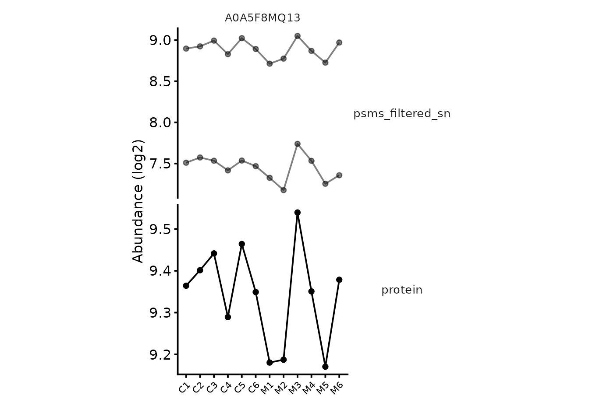

Working with QFeatures objects
Tom Smith
2026-09-11
Source:vignettes/qfeatures_objects.Rmd
qfeatures_objects.RmdEvery analysis in these vignettes keeps its data in a
QFeatures object, and the operations used to move through a
pipeline — adding an assay, filtering rows, aggregating to protein level
— are QFeatures operations rather than
biomasslmb ones. This article covers the handful you need,
so that the other vignettes can concentrate on the proteomics.
It is worth twenty minutes before starting an analysis of your own. Nothing here is specific to any acquisition type. The QFeatures documentation covers the object in more depth.
The idea: assays accumulate
A QFeatures object holds a list of assays. Each assay is
a SummarizedExperiment: a matrix of quantification values,
with rowData describing the features (PSMs, peptides,
precursors or proteins) and colData describing the
samples.
What makes it suited to proteomics is that a processing step adds a
new assay rather than overwriting the previous one.
tmt_qf is the object built by the TMT workflow vignette, and its
assay names are a record of what was done to it:
tmt_qf
#> An instance of class QFeatures (type: bulk) with 8 sets:
#>
#> [1] psms_raw: SummarizedExperiment with 11281 rows and 12 columns
#> [2] psms_filtered: SummarizedExperiment with 6312 rows and 12 columns
#> [3] psms_filtered_norm: SummarizedExperiment with 6312 rows and 12 columns
#> ...
#> [6] psms_filtered_missing: SummarizedExperiment with 4987 rows and 12 columns
#> [7] psms_filtered_forSum: SummarizedExperiment with 4853 rows and 12 columns
#> [8] protein: SummarizedExperiment with 402 rows and 12 columnsEach of those is a snapshot. Nothing was thrown away, so a
protein-level value can always be traced back to the PSMs behind it —
which is what plot_protein_assays() does, and why the QC
vignettes accumulate names like psms_filtered_sn rather
than reassigning one matrix.
The cost is that you have to name every intermediate. The names are
yours to choose; the vignettes use a convention of the feature level
followed by what was done (psms_filtered_rank,
peptides_for_summarisation).
Getting at the parts
[[ extracts one assay as a
SummarizedExperiment:
protein_se <- tmt_qf[['protein']]
protein_se
#> class: SummarizedExperiment
#> dim: 402 12
#> metadata(0):
#> assays(2): assay aggcounts
#> rownames(402): A0A286YCX6 A0A5F8MQ13 ... Q9Z2W1 S4R1W1
#> rowData names(21): Checked Tags ... Number.of.Protein.Groups .n
#> colnames(12): M1 C6 ... M2 M5
#> colData names(4): tag Condition Replicate quantColsFrom there the usual SummarizedExperiment accessors
apply — assay() for the quantification matrix,
rowData() for the feature annotations,
colData() for the sample annotations:
dim(assay(protein_se))
#> [1] 402 12
head(colnames(rowData(protein_se)))
#> [1] "Checked" "Tags" "Confidence"
#> [4] "Identifying.Node.Type" "Identifying.Node" "Search.ID"Single brackets subset the object itself, and take three arguments: rows, columns (samples), and assays. This is how you restrict to a subset of samples, as the testing vignette does when it drops the conditions it is not comparing:
# every assay, control samples only
control_only <- tmt_qf[, tmt_qf$Condition == 'Control']
dim(assay(control_only[['protein']]))
#> [1] 402 6The third argument selects assays, which is useful when a function should only see part of the object:
Assigning into [[ adds or replaces an assay. This is the
workhorse of the QC vignettes:
tmt_qf[['psms_filtered']] <- filter_features_pd_dda(tmt_qf[['psms_raw']], ...)The experimental design
colData holds one row per sample, and it is what every
function that knows about experimental conditions reads —
plot_pca(colour_by = ),
condition_miss_score(group_cols = ), and the
model.matrix() calls in the testing vignettes.
colData(tmt_qf)
#> DataFrame with 12 rows and 4 columns
#> tag Condition Replicate quantCols
#> <character> <character> <character> <character>
#> M1 126 Mutant 1 M1
#> C6 128N Control 6 C6
#> C5 128C Control 5 C5
#> M4 129N Mutant 4 M4
#> C3 130N Control 3 C3
#> ... ... ... ... ...
#> C4 132N Control 4 C4
#> M3 133N Mutant 3 M3
#> C2 133C Control 2 C2
#> M2 134C Mutant 2 M2
#> M5 135N Mutant 5 M5What your design table needs
The design table you pass as colData when reading data
in has to satisfy a small contract, and getting it wrong is the most
common thing to go wrong at the first step.
-
A
quantColscolumn, holding the names of the columns in your data file that contain quantification values. This is howreadQFeatures()knows which columns are abundances and which are annotation. Alternatively, passquantColsdirectly toreadQFeatures()as a column index or name vector, and the design table does not need the column. -
Rownames, or a
quantColscolumn, matching the sample identifiers. After reading, the assay’s column names come fromquantCols, andcolDatarows are matched to them by name. If they disagree, samples silently fail to line up. -
A
runColcolumn, only when one file holds several runs that should become separate assays — several TMT plexes, or the per-run output of DIA-NN. See multi-plex TMT. -
Your experimental variables, named as you like:
Condition,Replicate,Timepoint,Genotype. These are what you refer to later by name.
tmt_clock_design is a minimal example:
knitr::kable(tmt_clock_design)| tag | Condition | Replicate | quantCols | |
|---|---|---|---|---|
| C1 | 130C | Control | 1 | C1 |
| C4 | 132N | Control | 4 | C4 |
| C5 | 128C | Control | 5 | C5 |
| C6 | 128N | Control | 6 | C6 |
| M1 | 126 | Mutant | 1 | M1 |
| M4 | 129N | Mutant | 4 | M4 |
| M3 | 133N | Mutant | 3 | M3 |
| C2 | 133C | Control | 2 | C2 |
| C3 | 130N | Control | 3 | C3 |
| M2 | 134C | Mutant | 2 | M2 |
| M6 | 131C | Mutant | 6 | M6 |
| M5 | 135N | Mutant | 5 | M5 |
Its rownames are the quantification column names in
psm_tmt_clock, which is why the vignette passes
quantCols = rownames(tmt_clock_design).
In practice the design usually arrives as a spreadsheet from whoever ran the samples, and the first job of an analysis is to read it in and check it against the column names in the data file. That check is worth making explicitly — a mismatch produces a working-looking object with the labels shuffled.
Attaching the design to an assay
readQFeatures() attaches colData at the
object level only, so the assays inside start with an empty
colData:
tmt_qf_new <- readQFeatures(assayData = psm_tmt_clock,
colData = tmt_clock_design,
quantCols = rownames(tmt_clock_design),
name = 'psms_raw')
#> Checking arguments.
#> Loading data as a 'SummarizedExperiment' object.
#> Formatting sample annotations (colData).
#> Formatting data as a 'QFeatures' object.
dim(colData(tmt_qf_new))
#> [1] 12 4
dim(colData(tmt_qf_new[['psms_raw']]))
#> [1] 12 0Functions that plot or model a single assay need the design on that
assay. sync_coldata() copies it across, matching on sample
name:
tmt_qf_new <- sync_coldata(tmt_qf_new)
dim(colData(tmt_qf_new[['psms_raw']]))
#> [1] 12 4Assays created by aggregateFeatures() and
joinAssays() also start without colData, so it
is worth calling again after those. Calling it on the whole object is
cheap and idempotent.
Filtering rows
filterFeatures() filters on rowData
columns, across the whole object or one named assay, using a
formula:
nrow(tmt_qf[['psms_raw']])
#> [1] 11281
filtered <- filterFeatures(tmt_qf, ~ Rank == 1, i = 'psms_raw')
#> 'Rank' found in 8 out of 8 assay(s).
nrow(filtered[['psms_raw']])
#> [1] 11201Note that filterFeatures() modifies the assay in place
rather than adding a new one, which is why the vignettes usually copy an
assay to a new name first and then filter it.
filterNA() filters on missingness instead, taking the
maximum proportion of missing values a feature may have:
peptides <- lfq_qf[['peptides_filtered_norm']]
c(all = nrow(peptides),
at_most_4_of_6_missing = nrow(filterNA(peptides, pNA = 4/6)),
complete_only = nrow(filterNA(peptides, pNA = 0)))
#> all at_most_4_of_6_missing complete_only
#> 2325 2226 1439pNA = 0 means no missing values at all. The threshold is
a real decision rather than a tidying step, and handling missing values covers
how to choose it.
Aggregating to protein level
aggregateFeatures() summarises features into a new
assay, grouping by a rowData column and applying a
function:
tmt_qf <- aggregateFeatures(tmt_qf,
i = 'psms_filtered_forSum',
fcol = 'Master.Protein.Accessions',
name = 'protein',
fun = base::colSums)fcol is the grouping column — the protein each feature
was assigned to — and fun is the summarisation method.
Which fun to use is the subject of choosing a summarisation
method.
Unlike the filtering functions, this one takes the whole object and returns the whole object, because it needs to record the link between the input and output assays.
Assay links
Those links are what lets you go back.
aggregateFeatures() records which features contributed to
which protein, so a protein-level value can be traced to the PSMs behind
it:
poi <- rownames(tmt_qf[['protein']])[2]
contributing <- tmt_qf[[ 'psms_filtered_forSum' ]]
contributing <- contributing[
rowData(contributing)$Master.Protein.Accessions == poi, ]
c(protein = poi, n_psms = nrow(contributing))
#> protein n_psms
#> "A0A5F8MQ13" "2"plot_protein_assays() does this across several assays at
once, which is the quickest way to check whether a hit rests on agreeing
features or on one outlier:
plot_protein_assays(tmt_qf, poi,
experiments_to_plot = c('psms_filtered_sn', 'protein'),
log2transform_cols = 'psms_filtered_sn')
Transformations
Two operations return a modified assay rather than a whole object, and both are used in every QC vignette:
# log2 transform
tmt_qf[['protein']] <- logTransform(tmt_qf[['protein']], base = 2)
# normalise, here shifting every sample to a common median
tmt_qf[['peptides_norm']] <- normalize(tmt_qf[['peptides']], method = 'diff.median')normalize() expects log-scale values. Where a later step
needs the original scale — summing PSMs, for instance — the vignettes
exponentiate back with assay(x) <- 2^assay(x).
Joining assays
joinAssays() merges several assays into one, matching
features by row name. This is how separately processed TMT plexes are
brought together, and how DIA-NN’s per-run assays are combined:
qf <- joinAssays(qf, i = c('protein_1', 'protein_2'), name = 'protein_joined')Features present in one assay and not another become NA,
which for multi-plex TMT is a meaningful category rather than a nuisance
— see multi-plex TMT.
A summary of the vocabulary
| Operation | Function | Returns |
|---|---|---|
| Read data in | readQFeatures() |
QFeatures |
| Extract one assay | obj[[i]] |
SummarizedExperiment |
| Subset samples or assays | obj[rows, cols, assays] |
QFeatures |
| Add or replace an assay | obj[[i]] <- ... |
— |
| Attach the design to assays | sync_coldata() |
QFeatures |
| Filter on feature annotation | filterFeatures() |
QFeatures |
| Filter on missingness | filterNA() |
same as input |
| Log transform | logTransform() |
SummarizedExperiment |
| Normalise | normalize() |
same as input |
| Summarise to protein | aggregateFeatures() |
QFeatures |
| Merge assays | joinAssays() |
QFeatures |
Where to go next
With the vocabulary in hand, getting started explains which analysis vignette applies to your experiment, and the vignette for your acquisition type works through one from search engine output to protein-level quantification.
Getting help
If your experiment does not fit what this article assumes, or a result looks wrong, please get in touch with Tom Smith (tsmith@mrclmb.ac.uk) rather than guessing — it is far easier to help while an analysis is in progress than to unpick a decision afterwards, and easier still before the samples are run. Getting started sets out which article applies to which experiment.
sessionInfo()
#> R version 4.5.3 (2026-03-11)
#> Platform: x86_64-pc-linux-gnu
#> Running under: Ubuntu 24.04.5 LTS
#>
#> Matrix products: default
#> BLAS: /usr/lib/x86_64-linux-gnu/openblas-pthread/libblas.so.3
#> LAPACK: /usr/lib/x86_64-linux-gnu/openblas-pthread/libopenblasp-r0.3.26.so; LAPACK version 3.12.0
#>
#> locale:
#> [1] LC_CTYPE=C.UTF-8 LC_NUMERIC=C LC_TIME=C.UTF-8
#> [4] LC_COLLATE=C.UTF-8 LC_MONETARY=C.UTF-8 LC_MESSAGES=C.UTF-8
#> [7] LC_PAPER=C.UTF-8 LC_NAME=C LC_ADDRESS=C
#> [10] LC_TELEPHONE=C LC_MEASUREMENT=C.UTF-8 LC_IDENTIFICATION=C
#>
#> time zone: UTC
#> tzcode source: system (glibc)
#>
#> attached base packages:
#> [1] stats4 stats graphics grDevices utils datasets methods
#> [8] base
#>
#> other attached packages:
#> [1] biomasslmb_0.1.0 QFeatures_1.20.0
#> [3] MultiAssayExperiment_1.36.2 SummarizedExperiment_1.40.0
#> [5] Biobase_2.70.0 GenomicRanges_1.62.1
#> [7] Seqinfo_1.0.0 IRanges_2.44.0
#> [9] S4Vectors_0.48.1 BiocGenerics_0.56.0
#> [11] generics_0.1.4 MatrixGenerics_1.22.0
#> [13] matrixStats_1.5.0
#>
#> loaded via a namespace (and not attached):
#> [1] tidyselect_1.2.1 dplyr_1.2.1 farver_2.1.2
#> [4] blob_1.3.0 Biostrings_2.78.0 S7_0.2.2
#> [7] fastmap_1.2.0 lazyeval_0.2.3 XML_3.99-0.24
#> [10] digest_0.6.39 lifecycle_1.0.5 cluster_2.1.8.2
#> [13] ProtGenerics_1.42.0 survival_3.8-6 KEGGREST_1.50.0
#> [16] RSQLite_3.53.3 magrittr_2.0.5 genefilter_1.92.0
#> [19] compiler_4.5.3 rlang_1.3.0 sass_0.4.10
#> [22] tools_4.5.3 igraph_2.3.3 yaml_2.3.12
#> [25] corrplot_0.95 knitr_1.52 labeling_0.4.3
#> [28] S4Arrays_1.10.1 htmlwidgets_1.6.4 bit_4.6.0
#> [31] DelayedArray_0.36.1 plyr_1.8.9 RColorBrewer_1.1-3
#> [34] abind_1.4-8 withr_3.0.3 purrr_1.2.2
#> [37] desc_1.4.3 grid_4.5.3 xtable_1.8-8
#> [40] ggplot2_4.0.3 scales_1.4.0 MASS_7.3-65
#> [43] cli_3.6.6 rmarkdown_2.32 crayon_1.5.3
#> [46] ragg_1.5.2 otel_0.2.0 robustbase_0.99-7
#> [49] httr_1.4.9 reshape2_1.4.5 BiocBaseUtils_1.12.0
#> [52] DBI_1.3.0 cachem_1.1.0 stringr_1.6.0
#> [55] splines_4.5.3 AnnotationDbi_1.72.0 AnnotationFilter_1.34.0
#> [58] XVector_0.50.0 vctrs_0.7.3 Matrix_1.7-4
#> [61] jsonlite_2.0.0 naniar_1.1.0 visdat_0.6.0
#> [64] bit64_4.8.6 clue_0.3-68 systemfonts_1.3.2
#> [67] tidyr_1.3.2 jquerylib_0.1.4 annotate_1.88.0
#> [70] glue_1.8.1 DEoptimR_1.2-1 pkgdown_2.2.1
#> [73] uniprotREST_1.0.0 stringi_1.8.9 gtable_0.3.6
#> [76] tibble_3.3.1 pillar_1.11.1 htmltools_0.5.9
#> [79] R6_2.6.1 textshaping_1.0.5 evaluate_1.0.5
#> [82] lattice_0.22-9 backports_1.5.1 png_0.1-9
#> [85] memoise_2.0.1 bslib_0.12.0 Rcpp_1.1.2
#> [88] checkmate_2.3.4 SparseArray_1.10.10 xfun_0.60
#> [91] MsCoreUtils_1.22.1 fs_2.1.0 pkgconfig_2.0.3